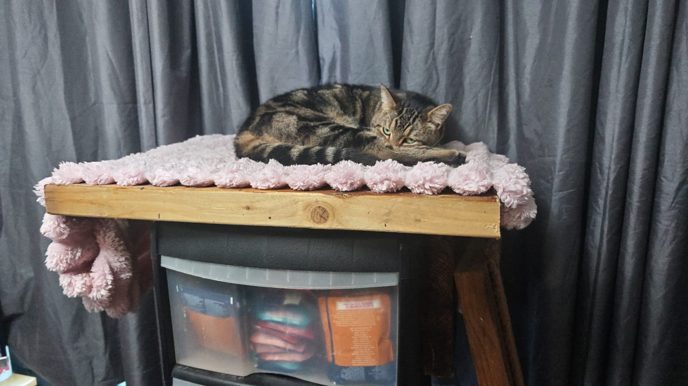

Busy busy busy
I haven’t had time to update this site in a while, but I’ve been hard at work in the background.
On the day I wrote these notes, I went to the MACH engineering show, my fifth time attending so far. It’s always a brilliant place to see new technology and speak to like-minded people. The last time I went was the first time I attended representing myself and my company. This time felt a bit different again, because I was actively looking for things that would be useful for what I’m currently building, especially the open source CMM and my metrology fixturing work.
MACH show finds
A few things stood out this time.
Tooling
There were loads of different manufacturers showing high-quality tooling. I grabbed a fair few catalogues and had some good conversations, so I’ve now got some useful contacts in that space.
Main board for the open source CMM
One of the best finds was a company specialising in open source control boards for things like 3D printers, CNCs, and potentially even my CMM. That immediately caught my attention. They use RepRapFirmware and have been open source for well over a decade with no intention of changing that, which is something I resonate with massively.
Linear rails
Another useful contact was a company specialising in linear rails and ball screw rail systems. That’s something I’ll definitely need for the system I’m building.
The rails themselves don’t do the measuring, but they do need to keep motion straight and consistent in each axis, so their accuracy and stiffness matter a lot. The specs looked more than good enough for what I need, and they can also handle decent loads, which will matter for the head weight on the open source CMM.
They offer a wide range of sizes and can cut to spec, so the next step is to organise a call with them after the follow-up email, discuss my options properly, and hopefully get some CAD data before I commit to a rail system.
Parts distributor
The final notable mention is a parts distributor that seems to sell just about everything. The catalogue is massive, and more importantly they supply CAD models and drawings for their parts. That’s a huge help when designing products, because it means I can integrate off-the-shelf components directly into assemblies and design around real geometry instead of guessing.
Overall, it was a great show and a very worthwhile trip. I came away with new contacts and a few genuinely useful leads.
Cat tree
This is a very random one, but it’s also something that’s kept me busy.
My cats decided that the top of my plastic drawers was a perfect place to sleep. The problem was that when two or three of them tried to get up there at once, there obviously wasn’t enough room. So I quickly put something together to sit on top of the drawers, with a lower platform and a rope-wrapped plank to help them climb up.
It’s not how I intended to spend a week of my time, but the result actually looks great, I’m happy with it, and more importantly it stops the cats from potentially falling off the high drawers.

CNC machining
I also ordered a small CNC machine — a 3018. It’s obviously not huge, but it’s more than enough for what I need right now.
The first problem was remembering that I haven’t properly written G-code since college, and even then, writing it manually is a pain when CAM software exists.
My first test was a simple facing operation to start figuring out speeds and feeds for cutting resin. I started at about 150 mm/min, which worked fine, but it took far too long and the chips it produced were more like a fine dust. That tells me I can definitely push the cutter harder in resin. This was at 14,000 rpm, which is pretty much the maximum I can run at the moment.
The next test was learning how to use CAM software to generate G-code properly. Since I already have SOLIDWORKS, I started there. I drafted some simple stock using the back of a scrap vee block as my test material, then made a basic pocket to generate a toolpath.
I did have to watch a few tutorial videos because I’d never touched the CAM side of it before, and I wasn’t about to risk smashing the machine up or snapping a tool for no reason. I also removed all of the extra tools from the software setup since I only have a single cutter and no toolchanger.
It generated roughing and finishing passes nicely and gave me the G-code output. I loaded that into UGS (Universal Gcode Sender) and ran it from my laptop over USB to the CNC. To set zero, I went a bit old school and used cigarette paper against the side of the part for X and Y, then did the same for Z, so the start position was the corner of the resin block.
The program ran fine overall and took some pretty deep cuts. It made a lot more noise, but also produced much cleaner chips. They were still small, but much less dust-like, which I suspect is more to do with the small cutter than constant recutting. I do need to get an air line on it as soon as possible though.
The one issue is that some of the commands SOLIDWORKS generated would pause the machine and force me to manually continue. I also don’t think it handled the finishing pass correctly on every face. It was lifting and dropping in Z far more than I expected, and I’m not yet sure why. I’ll do some more digging, watch a few more videos, and clean up the post output so I’m not feeding the machine anything overly specific to bigger industrial setups.
Hard drive
This one is probably a bit menial to most people, but I’ve finally sorted my data out.
I’ve got around 2 TB of data — books, documents, software, and all sorts of random stuff. I’m definitely a bit of a data hoarder, so I had way more than I needed. I’ve now cleaned out the rubbish and organised the drive into 11 numbered and categorised folders.
I’ve now got:
- one copy on the PC
- one copy on an external hard drive
- and selected files moved onto my phone
The PC copy means OpenClaw can send me files while I’m on the go, which saves me needing to carry everything around locally. I do still need to get Tailscale set up properly so I’ve got better access without burning token usage just to fetch simple files.
The external drive isn’t really a proper off-site backup, but if the house ever catches fire, it’s absolutely one of the things I’m grabbing.
I’m also going to periodically sync my phone and clone drive to the external disk so that new photos, books, and other important files are always duplicated.
iOS to Android
Talking of files on phones, none of that would have been this practical on my old phone.
After 10 years on iOS, I’ve moved from an iPhone 14 Pro to a Xiaomi 17 Ultra. Not only is it my first Android phone in years, it’s also the most expensive device I’ve ever bought.
The biggest difference is just how much more I can do on the go. Instead of needing jailbreak tweaks to get the sort of functionality I wanted, things like proper file handling, better multitasking, and more flexible tooling are either built in or only an app away.
For my use cases, Android makes far more sense. I like to tinker, I like to hack things together, and I’ve got a big library of data that I need to access quickly and properly. I want tools that make me more efficient, not ones that fight me every step of the way.
The hardware side helps too. I’ve now got 1 TB of storage and 16 GB of RAM, plus the extra memory extension Android offers. It means I can comfortably game on it if I want to, but more importantly, I can do heavier tasks without needing a PC for every little thing. I can manage files properly, run code, and even get a terminal open if I need to.
It’s not a huge project update in itself, but I’m genuinely very happy with the switch and wanted to mention it.
Updates
I haven’t been the best at keeping the blog updated lately. Life has been busy, and I’ve definitely been milking the overtime a bit, but I am still working on things in the background.
I’ve still got plenty in progress:
- finishing the catio design
- finishing the vee blocks
- more interesting CNC machining
- and continued progress on the open source CMM
So yes, it’s been quiet here — but not because nothing’s happening.
Phew, that was a lot. Stay tuned.